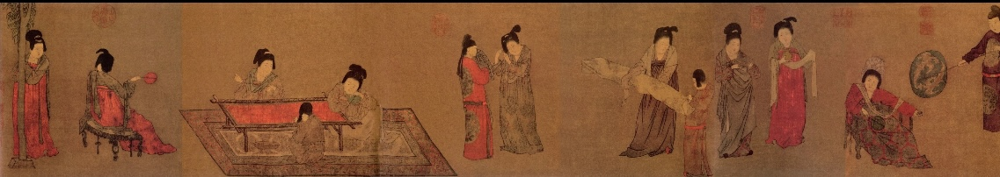

传世名画
每一幅画作，都是大唐风华的时代留影

《步辇图》
描绘唐太宗李世民接见吐蕃使者禄东赞的历史场景。画面中唐太宗端坐步辇之上，威严庄重；禄东赞恭敬肃立，展现出大唐天子气度与汉藏友好的历史佳话。笔法精炼，设色古雅，是唐代历史画的巅峰之作。

《簪花仕女图》
描绘唐代贵族妇女赏花游园的闲适生活，仕女体态丰腴，衣饰华丽，发髻高耸簪花。画面设色柔美，线条流畅，充分展现了唐代"绮罗人物"画风的最高成就，是唐代仕女画的典范之作。

《捣练图》
描绘唐代宫廷妇女捣练、织修、熨烫的劳动场景，生动再现了盛唐时期的纺织工艺与女性日常生活。人物神态各异，动态自然，设色明丽，是唐代风俗画的经典之作。

《虢国夫人游春图》
描绘杨贵妃之姊虢国夫人与从骑春日出游的场景。画面不绘背景，以人物鞍马为主体，通过服饰、马匹的华美展现贵族的奢华气派。构图疏密有致，人物神采飞扬。

《挥扇仕女图》
描绘唐代宫廷妇女夏日纳凉的生活场景，仕女或挥扇、或抚琴、或对镜梳妆。画面氛围慵懒闲适，表现出宫廷贵妇的日常生活情趣，是周昉"绮罗人物"风格的重要代表作。